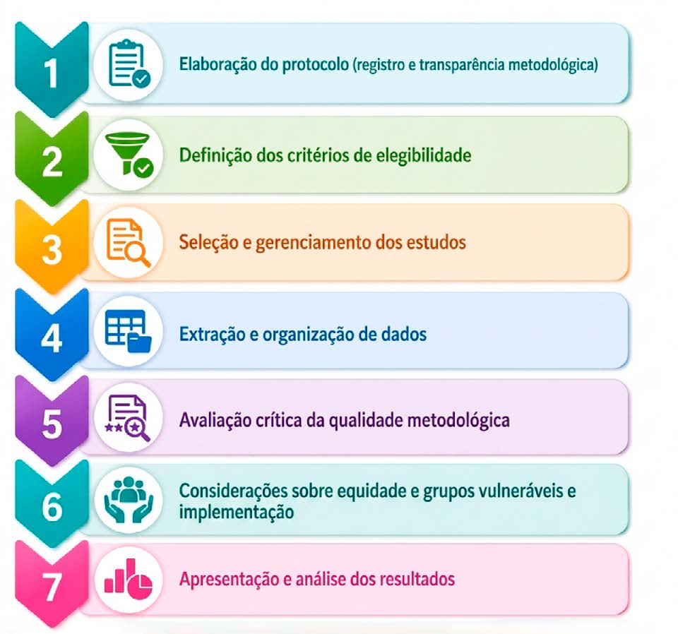

Módulo 2 | Aula 2
Definição da questão de pesquisa, busca por evidências e elaboração de síntese de evidências para políticas
Elaboração de síntese de evidências para informar políticas
Como você viu na Aula 1 do Módulo 2, existem diferentes produtos de tradução do conhecimento utilizados no contexto das Políticas Informadas por Evidências. Então, vamos agora aprofundar o conhecimento sobre as sínteses de evidências para informar políticas, fundamentais para dar suporte à tomada de decisão de forma sistemática e transparente.
Até agora, as etapas que já foram apresentadas são utilizadas para todos os documentos de tradução do conhecimento. Por isso, a partir de agora você vai conhecer as etapas para elaboração desse produto específico.
Etapas da elaboração
Figura 6 – Elaboração de uma síntese.
Clique em cada etapa para saber mais.

Fonte: Elaborado pelas autoras a partir de Brasil (2025a); Latorraca et al. (2023); Toma et al. (2017).
Elaboração do protocolo (registro e transparência metodológica)
A elaboração do protocolo permite planejar, organizar e documentar os procedimentos metodológicos que serão realizados. É o seu guia para orientar os objetivos e etapas da síntese. É importante salientar que o registro prévio do protocolo também favorece a credibilidade do processo. Assim, os protocolos podem ser registrados em plataformas específicas, como o PROSPERO e o Open Science Framework (OSF).
Definição dos critérios de elegibilidade
Os critérios de elegibilidade definem quais estudos serão incluídos ou excluídos da síntese de evidências para políticas. Essa etapa garante que os estudos selecionados sejam coerentes com a questão de pesquisa e com os objetivos estabelecidos. Eles determinam os elementos de exclusão e inclusão em relação à população, intervenção ou exposição, comparador, desfechos, contexto, delineamento dos estudos, idioma, período de publicação e tipo de documento.